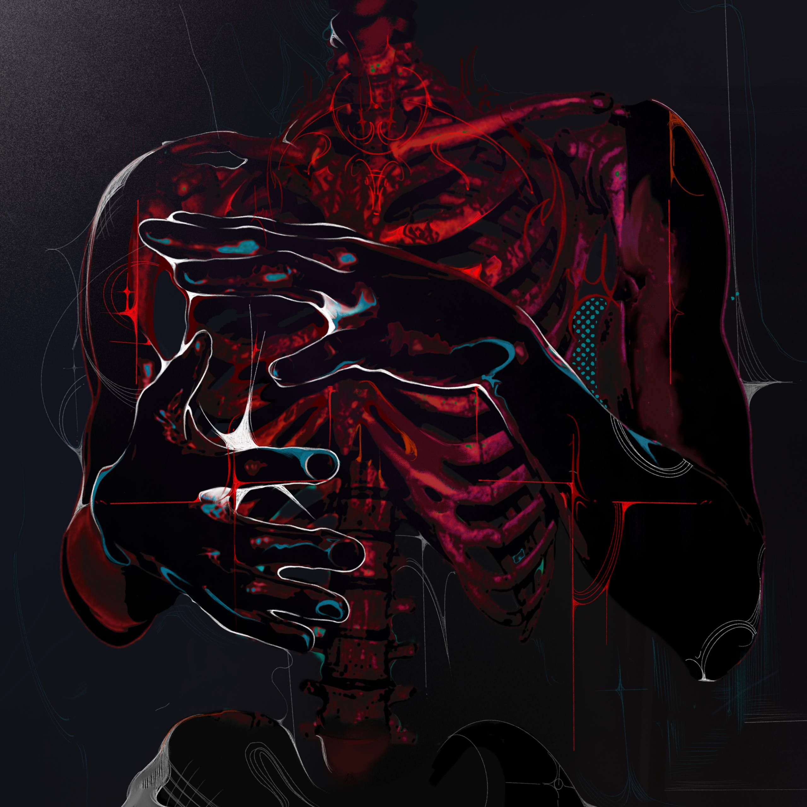

Андрей присоединился к группе позже — он участник расширенного состава для живых выступлений. В некоторых источниках встречается вариант фамилии «Деменков».
Андрей стал настолько заметной фигурой в коллективе, что пятый альбом группы назван в его честь — «KSB MUZIC 5: ЖИЗНЬ И СТРАДАНИЯ АНДРЕЯ ДЕМЕНТЬЕВА» (2026). Открывающий трек альбома (шутливый) подробно описывает вымышленную медицинскую историю Андрея — что говорит о его роли как любимого объекта дружеских подколок в группе.